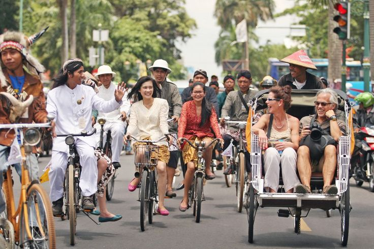
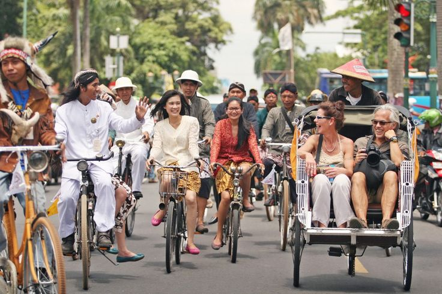

Dampak Positif Kerjasama Bilateral bagi kedua negara
Kerja sama Indonesia-Chile dan pelaksanaan SDGs memiliki berbagai dampak yang menguntungkan bagi negara Indonesia
dan Chile
Perluasan pasar untuk produk-produk kedua negara:
IC-CEPA memungkinkan penghapusan atau pengurangan tarif impor pada sejumlah besar produk dari kedua negara,
sehingga produk dari kedua negara dapat bersaing di pasar masing-masing negara dan meningkatkan
kondisi ekonomi kedua negara.
Penciptaan berbagai lapangan kerja baru:
Meningkatnya ekspor dan investasi menciptakan lapangan kerja baru di sektor
manufaktur, logistik, dan distribusi. Hal ini dapat membantu kondisi ekonomi kedua negara
dan meningkatkan kesejahteraan masyarakat kedua negara
Pertukaran teknologi dan ilmu pengetahuan:
Chile, yang memiliki pengalaman di sektor agrikultur modern dan energi terbarukan, dapat membantu Indonesia meningkatkan efisiensi di sektor tersebut.
Indonesia juga dapat membantu Chile dengan memperkenalkan inovasi di bidang makanan olahan dan tekstil kepada Chile.
Peningkatan Daya Saing Global:
Dalam meningkatkan dan mempermudah ekspor-impor barang dari kedua negara untuk berbagai produk dan barang
produk-produk dari kedua negara mendapatkan peluang untuk memasuki pasaran global dan
meningkatkan daya saing produk-produk dari kedua negara dalam pasaran internasional


.png)
.png)
.png)
.png)
.png)
.png)
 
